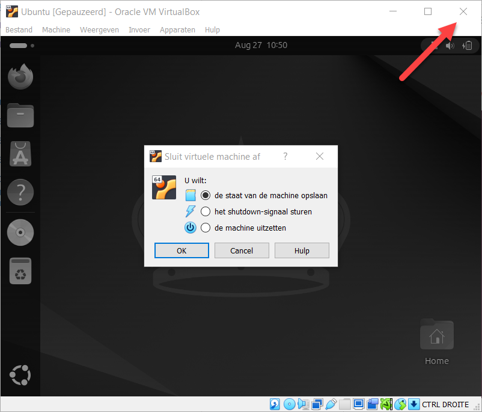

De guest denkt dat hij een computer voor zich heeft, en die computer bestaat uit software. VirtualBox bootst een processor na, een hoeveelheid werkgeheugen, een harde schijf, een netwerkkaart, een grafische kaart en een dvd-station, en het besturingssysteem in de guest praat daarmee zoals het met echte onderdelen zou praten. Op deze pagina staat wat je van die nagebootste hardware zelf instelt.
Een processor kan de guest twee kanten op helpen. Zonder hulp moet VirtualBox elke instructie van de guest zelf vertalen, en dat is traag. Elke recente processor heeft daarom een uitbreiding die de guest zijn instructies rechtstreeks laat uitvoeren, met de hardware die bewaakt dat hij niet buiten zijn virtuele machine komt. Bij Intel heet die uitbreiding VT-x, bij AMD heet ze AMD-V of SVM.
Die uitbreiding staat in de firmware van je laptop en kan er uit staan. Merk je dat pas in VirtualBox, dan is dat aan één ding te zien: bij Versie zijn alleen de 32-bitbesturingssystemen te kiezen. Zet de instelling aan in de firmware van je laptop, en zet in Windows eventueel Hyper-V uit, want twee programma's kunnen niet tegelijk over die uitbreiding beschikken.
Ook een virtuele machine heeft firmware nodig: software die draait voor er een besturingssysteem is, die de nagebootste hardware klaarzet en daarna zoekt waarvan ze kan opstarten. VirtualBox biedt daar twee vormen voor, en met het vinkje EFI kies je welke.
Het is de opvolger van het BIOS, de firmware die pc's sinds de jaren tachtig gebruikten. De gestandaardiseerde versie ervan heet UEFI, met de U van Unified, en in de praktijk worden beide namen door elkaar gebruikt.
Wat EFI beter doet dan een BIOS: het start van schijven die groter zijn dan 2 TB, het houdt zelf een lijst van opstartbare besturingssystemen bij in plaats van alleen een volgorde van toestellen, en het heeft een grafische interface waarin je de muis kan gebruiken. Op een fysieke computer die je vandaag koopt zit altijd EFI.
In dit labo zet je het vinkje aan, omdat recente Ubuntu-versies ervan uitgaan dat ze op EFI opstarten. Laat je het uit, dan start de machine met een nagebootst BIOS en kan de installatie halverwege stilvallen.
Een pas aangemaakte virtuele machine heeft een lege harde schijf, dus haar firmware vindt niets om van op te starten. Ze heeft installatiemedia nodig, en dat is bij een virtuele machine een bestand.
Een ISO-bestand is de volledige inhoud van een cd, een dvd of een USB-stick in één bestand, met het bestandssysteem erin en niet alleen de bestanden. De naam komt van ISO 9660, de standaard voor het bestandssysteem van een cd. Wie Ubuntu downloadt, krijgt zo'n bestand, en wie het op een fysieke computer wil installeren, schrijft het eerst naar een USB-stick.
Bij een virtuele machine hoeft dat niet. Je koppelt het bestand aan het nagebootste dvd-station, en dat koppelen heet mounten. Vanaf dat moment ziet de guest een dvd in zijn station, en start de firmware daarvan op omdat de harde schijf niets te bieden heeft.
Sluit je het venster van een draaiende virtuele machine, dan vraagt VirtualBox wat er met de machine moet gebeuren. De drie keuzes doen iets anders met wat er op dat moment in het werkgeheugen staat.

Reageert de guest niet meer op het shutdownsignaal, dan is er nog een weg voor je de stekker uittrekt:
hem van binnenuit afsluiten met het commando sudo shutdown now in een terminalvenster.
Het werkgeheugen en het aantal processoren van een draaiende machine liggen vast. Hoeveel geheugen je haar het best geeft, staat op Schijf en geheugen.